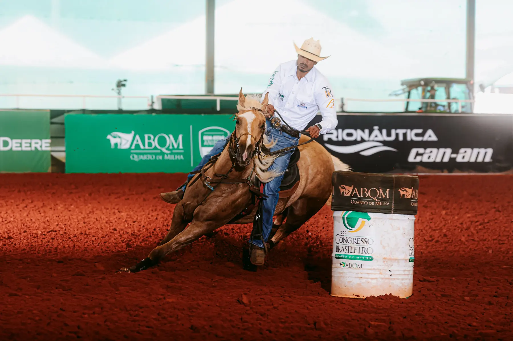

B2B The Fling French ganha mais de US$ 8 mil em Houston
Exportada depois de adquirida no 15º Leilão B2B Ranch & Amigos, B2B The Fling French ganhou mais de US$ 8 mil na Houston Qualifiers & 1D Winners.

B2B The Fling French, filha de Frenchmans Guy com Fling N Delight, foi adquirida no 15º Leilão B2B Ranch & Amigos, durante o Congresso Brasileiro, e exportada em seguida. O resultado em Houston mostra o alcance internacional da criação.
No Brasil, B2B Movidas Guy, irmã própria de A Smooth Guy, é mãe de B2B Quaker Tux Guy, com títulos no Congresso Brasileiro, Grand Slam Cutter, PF e Copa WV, e de B2B Alaska French.
B2B Ranch · Apaixonados por grandes cavalos